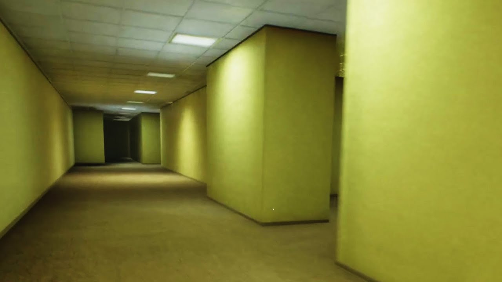
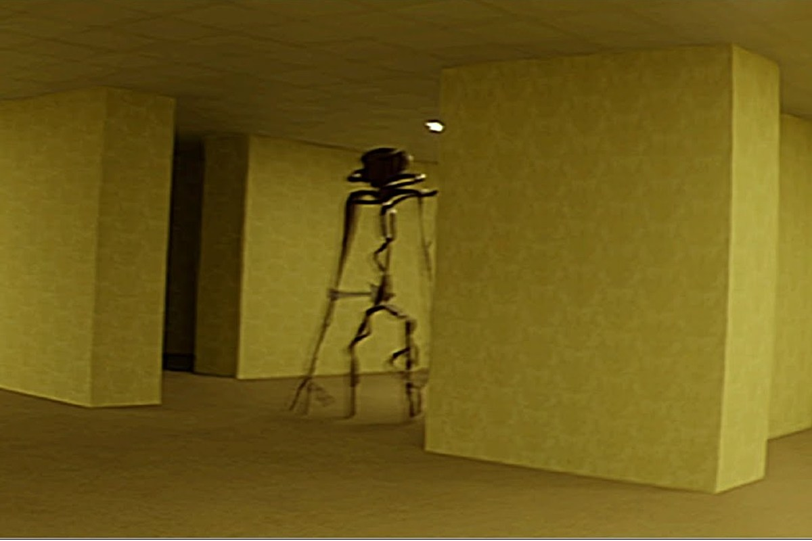

<!DOCTYPE html>
<html lang="en">

</html>

<head>
    <title>Daniel's Diary</title>
    <meta charset="UTF-8">
    <meta name="description"
        content="This field contains information about your page. It is usually around two sentences long.">.
    <meta name="author" content="Conor Sheils">
    </header>

<body style="background-color:lightpink ;">
    <h1 style="color:blueviolet ; font-family:verdana;">
        Daniel's Diary
    </h1>
    <h2 style="color:deeppink ;">
        Day 1
    </h2>
    <p1>I was on my way to work, bought a new diary for myself, and went on the metro to my job site. However, once I
        boarded the train,
        I started sinking, clipping through anything in the way, and all that surrounded me twenty seconds later was
        yellow walls.
        No way this was a prank, after all, I started sinking and no one payed attention to me. I took out my phone and
        frantically searched
        for where I could be. No signal. Strange. When I did find some sort of signal, it was from near a device in the
        ground by the way,
        on a tripod, I searched up where I could be to no avail. I did find this place called, "The Backrooms", but I am
        yet to meet anything
        that could prove it is. I actually managed to find some variant of water and food, so I'm going to sleep next to
        that device.
        Hopefully, I can charge my phone here. </p1>
        
        <p>Do not forget to buy <mark>milk</mark> today.</p>
    <H3 style="color:deeppink ;">
        Day 2
    </H3>
    <p>
        I know I'm going to run out of supplies, if anything doesn't kill me first, so I started wandering a few miles
        in a random direction. The closest thing I found to civilisation was an old camp, secured by a mediocre wall
        around it. While my phones connectivity got increased, I doubt it is human for now. But then, I saw a human like
        person with no face. I nope'd out of there. Nothing too much today. Attempted to pick up some frequencies, and
        got my phone to broadcast a radio station called, "Backroom Colonists Radio", to see if there was much going on,
        but it mostly seemed like endless chit and chatter, songs, among other announcements so I just not listened to
        it for now.
    </p>
    <a href="https://youtu.be/2gTeuOpDZzw">Click me!</a>
    <span>6asda</span>5asd<span>4asd</span>3adsf2<span>1dvgftrgfh</span>
    <ol>
        <li>I'm not real</li>
        <li>Take me out</li>
        <li>You're not real</li>
        <li>Exit</li>
        <li>tixE</li>
    </ol>
    <h2 style="color:deeppink ;">
        Day 3
    </h2>
    <p>
        I found a sliding door. Finally, I can get something new from this! I went in, and found a metro system. Really
        funny guys. But I actually saw living humans this time! I talked for a bit, and some people gave me information
        about what levels to go to, what groups to join, what stuff to stock if you weren't going to join a group for
        now, tons and tons of stuff. When I went on the actual train, I kept waiting. Tons of people got off at certain
        spots, and it was only me for a bit of time. I decided to exit, and I went into the level known as "The Hub."
        This level, you can teleport to tons of different levels, plus the ones you already been too. I already unlocked
        Level 0, and The Metro from being there, but also get access to Level 1, Level 2, Level 3, and from what I got
        told Level 4/Level -1 by a chance, and Level 25 and some sort of a cryptic worded level. Most of the above,
        being 0 to 3, 25 and The Metro were unlocked, but Level 4 with that chance one was achieved by no clipping. I
        decided to go back to The Metro to rest, and figure where I should go next.
    </p>
    


</body>